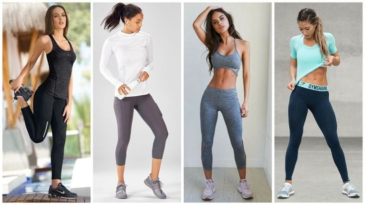
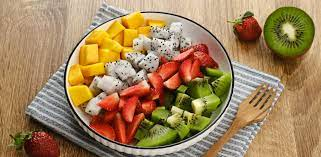

Beber agua

El agua es el componente químico principal del cuerpo y representa aproximadamente del 50 % al 70 % del peso corporal. Tu cuerpo depende del agua para sobrevivir. Cada célula, tejido y órgano del cuerpo necesita agua para funcionar correctamente. Por ejemplo, el agua hace posible todo lo siguiente:
- Elimina los desechos a través de la orina, la transpiración y las deposiciones.
- Mantiene la temperatura en niveles normales.
- Lubrica y amortigua las articulaciones.
- Protege los tejidos sensibles.
La falta de agua puede provocar deshidratación, un trastorno que ocurre cuando no hay suficiente agua en el cuerpo para llevar a cabo las funciones normales. Incluso una deshidratación leve puede agotar tu energía y causarte cansancio.
Utilizar ropa cómoda
Cuando hace ejercicio, la ropa que usa puede ser igual de importante que lo que hace. Usar el calzado y la ropa correcta para su deporte puede brindarle tanto comodidad como seguridad. Pensar sobre dónde y cómo hará ejercicio le ayuda a elegir la mejor ropa y calzado para sus ejercicios.
Asegúrese de que su ropa de ejercicio sea cómoda y le permita moverse con facilidad . En climas fríos, use capas, como una chaqueta o una blusa sobre una camiseta, para poder quitarse capas mientras calienta. Use ropa que permita que el aire circule y la humedad se evapore.
Duerma

Dormir le da al cuerpo y al cerebro tiempo para recuperarse del estrés del día. Después de una buena noche de sueño, usted se desempeña mejor y es mejor para tomar decisiones. Dormir lo ayuda a sentirse más alerta, optimista y a tener una mejor relación con las personas.
Duerma en un ambiente oscuro, tranquilo y cómodo. Haga ejercicio diariamente (pero no inmediatamente antes de irse a dormir). Limite el uso de aparatos electrónicos antes de irse a dormir. Antes de acostarse, relájese.
Comer frutas
La fruta es una parte importante de una dieta saludable y se asocia con todo tipo de beneficios para la salud, incluido un menor riesgo de contraer muchas enfermedades. La composición de nutrientes de la fruta varía mucho entre los diferentes tipos, pero todas las variedades contienen enormes propiedades y tienden a ser ricas en vitaminas y minerales.
La fruta también es fuente de fibra, que tiene muchos beneficios para la salud. Puede ayudar a reducir el colesterol, aumentar la sensación de saciedad y contribuir a la pérdida de peso con el tiempo. Y están cargadas de antioxidantes, que ayudan a combatir los radicales libres que pueden dañar las células. Consumir una dieta rica en antioxidantes puede ayudar a retrasar el envejecimiento y reducir el riesgo de enfermedades. Sobran los motivos para ser parte fundamental de tu dieta.
Música para relajarse
La música es nuestra mejor aliada, ya que disfrutamos más de lo que hacemos cuando escuchamos nuestras canciones favoritas. Pero, además de acompañarnos en entrenamientos, la música también puede ayudarnos a descansar. Ya sea para meditar, realizar quehaceres, o incluso para dormir. Aquí te dejamos algunas opciones para tu día: